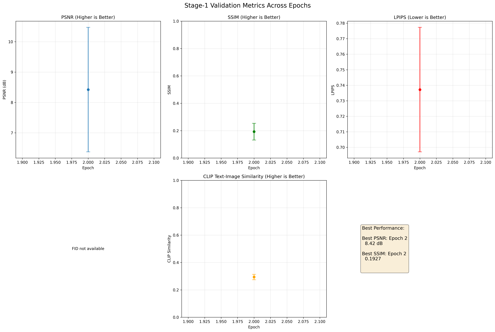

🎨 Stage-1 Sketch-Guided Diffusion - Validation Report
📊 Metrics Across Epochs
| Epoch |
PSNR (dB) |
SSIM |
LPIPS |
FID |
CLIP Sim |
Samples |
| Epoch 2 |
8.42 ± 2.05 |
0.1927 ± 0.0609 |
0.7371994853019714 |
N/A |
0.29375 |
5 |
📈 Visualization

🎯 Recommendations
- ⚠️ SSIM is low (<0.5). Consider training for more epochs.